Microsoft Excel Dasar
.svg)
Microsoft Excel adalah aplikasi spreadsheet (lembar kerja) dari Microsoft untuk mengolah data dalam bentuk tabel berisi baris dan kolom. Excel tidak hanya menyimpan data, tetapi juga menghitung otomatis memakai rumus.
Sumber logo: Wikimedia Commons, Microsoft Office Excel (2019–present).svg. Logo adalah merek dagang Microsoft Corporation.
Apa gunanya Excel di rumah sakit?
Total pasien per poli, per hari, atau per bulan.
Nilai stok, barang masuk dan keluar.
Harga × jumlah, total tagihan, anggaran.
Bahan laporan rapat, misalnya tren kunjungan (dipelajari di Pertemuan 07).
Istilah penting
| Istilah | Artinya |
|---|---|
| Workbook | Satu berkas Excel (.xlsx), ibarat buku. |
| Worksheet | Satu lembar di dalam workbook, ibarat halaman buku. |
| Cell | Satu kotak tempat data, hasil pertemuan baris dan kolom. |
| Formula | Rumus yang diawali tanda =, agar Excel menghitung sendiri. |
Jawab dulu tanpa takut salah, ini hanya untuk melihat titik awal kalian sebelum belajar.
Sebelum mengetik rumus, kita harus tahu di mana setiap bagian Excel berada. Klik titik bernomor pada gambar untuk melihat penjelasannya.
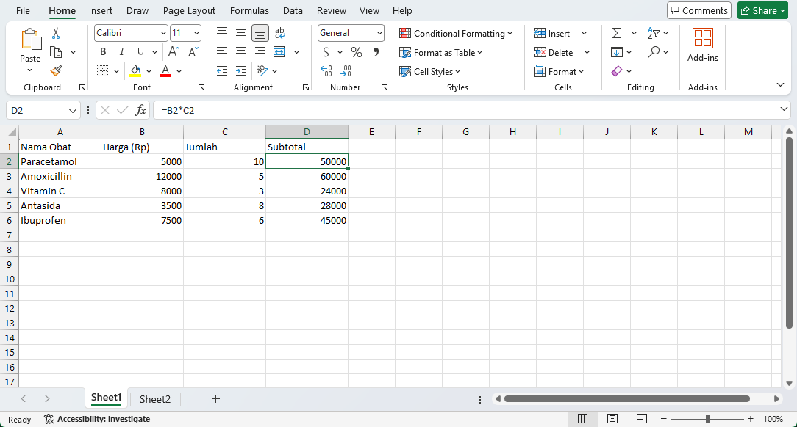
Tangkapan layar Microsoft Excel (versi Microsoft 365), diambil oleh dosen pengampu. Data contoh fiktif.
Cara membaca alamat sel
Sel tunggal
B3 = Kolom B, Baris 3
D12 = Kolom D, Baris 12
Rentang sel
B2:B10 = Kolom B, baris 2 sampai 10
A1:D5 = Blok 4 kolom × 5 baris
Cara cepat navigasi sel
- Enter: turun satu baris
- Tab: geser ke kanan satu kolom
- Ctrl + End: lompat ke sel terakhir berisi data
- Ctrl + Home: kembali ke A1
- Ketik alamat di Name Box lalu Enter, langsung ke sel tersebut
Latihan: klik sel yang diminta
Alamat sel yang kalian klik muncul di kotak Name Box, persis seperti di Excel. Selesaikan 6 soal.
Apa itu tipe data?
Tipe data adalah jenis isi sebuah sel. Tipe inilah yang menentukan bagaimana Excel menyimpan, menampilkan, dan menghitung isi sel tersebut. Angka 50000 bisa dijumlahkan, sedangkan "Rp 50.000" yang diketik dengan simbol Rp dianggap tulisan biasa dan diabaikan oleh rumus =SUM.
Empat tipe data yang paling sering dipakai
| Tipe | Pengertian | Contoh di RS | Rata default | Bisa dihitung? |
|---|---|---|---|---|
| Teks (Text) | Huruf, kata, atau gabungan huruf dan simbol. Bisa juga angka yang diperlakukan sebagai tulisan. | Siti Aminah, Poli Umum, No. RM 00012345 | Kiri | Tidak (diabaikan oleh SUM, AVERAGE, COUNT) |
| Angka (Number) | Bilangan murni tanpa simbol, bisa dijumlah, dikali, dan dirata-rata. | 125000, 45 pasien, 7,5 | Kanan | Ya |
| Tanggal dan waktu (Date, Time) | Hari, bulan, tahun, atau jam. Disimpan sebagai angka serial sehingga bisa dikurangkan. | 15/03/2026, jam kontrol 09.30 | Kanan | Ya (selisih dua tanggal = jumlah hari) |
| Persen (Percentage) | Angka desimal yang ditampilkan dengan tanda %. Nilai aslinya tetap desimal. | BOR 85% (disimpan 0,85) | Kanan | Ya |
Kebiasaan yang membantu: teks rata kiri, angka dan tanggal rata kanan. Kalau angka muncul rata kiri, curigai tersimpan sebagai teks.
Pilihan format di Excel (Format Cells, tab Number)
Di Excel tersedia 12 kategori format. Tidak semuanya perlu dihafal, tetapi kenali yang sering dipakai di administrasi RS.
| Kategori | Fungsi |
|---|---|
| General | Format bawaan. Angka tampil sesuai yang diketik. Angka sangat panjang (12 digit atau lebih) bisa berubah ke notasi ilmiah. |
| Number | Tampilan angka umum, dengan pilihan jumlah desimal dan pemisah ribuan. |
| Currency | Nilai uang dengan simbol mata uang, misalnya untuk biaya dan tarif. |
| Accounting | Juga untuk uang, tetapi simbol mata uang dan titik desimal dirapikan sejajar dalam satu kolom. |
| Date dan Time | Menampilkan angka serial sebagai tanggal atau jam, sesuai bentuk dan wilayah yang dipilih. |
| Percentage | Mengalikan nilai sel dengan 100 dan menambah tanda %. |
| Fraction | Menampilkan angka sebagai pecahan. |
| Scientific | Notasi eksponen, misalnya 12345678901 tampil sebagai 1,23E+10. |
| Text | Isi sel diperlakukan sebagai teks dan tampil persis seperti diketik, termasuk bila berisi angka. |
| Special | Format khusus seperti kode pos, nomor telepon, atau nomor identitas (sesuai wilayah). |
| Custom | Membuat format sendiri dari salinan format yang ada. |
Referensi:
1. Microsoft Support, Available number formats in Excel.
https://support.microsoft.com/en-us/office/available-number-formats-in-excel-0afe8f52-97db-41f1-b972-4b46e9f1e8d2
2. Microsoft Support, Excel specifications and limits (batas presisi 15 digit).
https://support.microsoft.com/en-us/office/excel-specifications-and-limits-1672b34d-7043-467e-8e27-269d656771c3
Diakses 19 November 2026. Contoh data adalah fiktif.
Di mana tipe data diatur?
Langkah 1: lihat tipe data sebuah sel
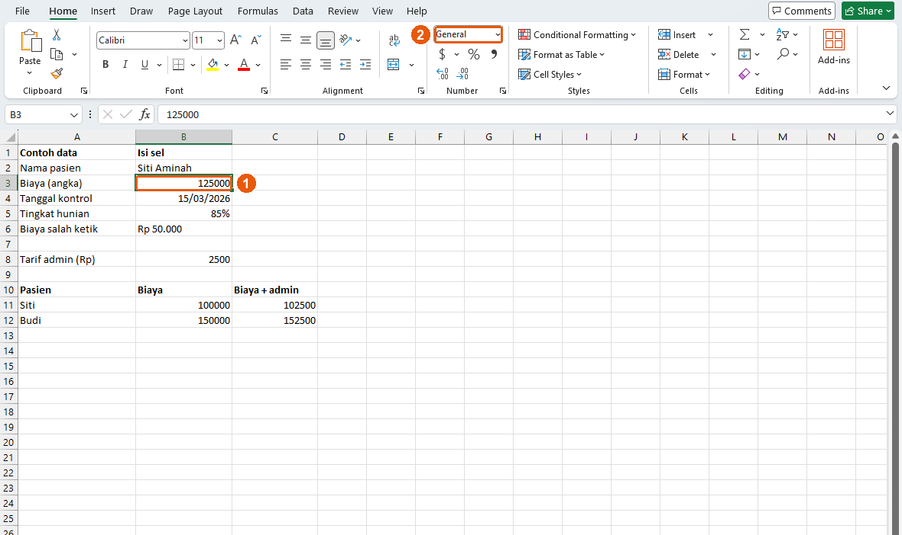
- Klik sel yang ingin dicek, misalnya B3.
- Lihat kotak Number Format di tab Home, grup Number. Di sini tertulis tipe/format sel: General, Number, Date, Percentage, Text, dan seterusnya.
Contoh lain: pada sel berisi 85%, kotaknya menampilkan Percentage.
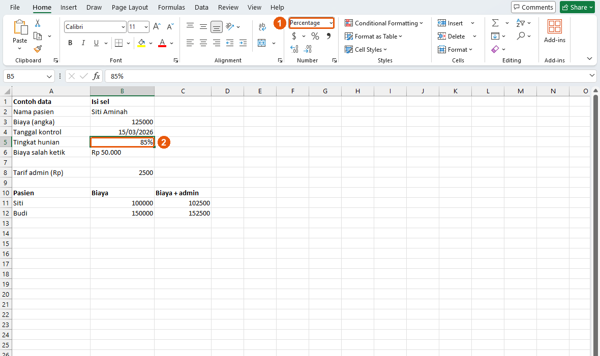
- Kotak Number Format menampilkan tipe sel yang dipilih.
- Sel B5 terpilih dan berisi 85%.
Langkah 2: ubah tipe data lewat daftar Number Format
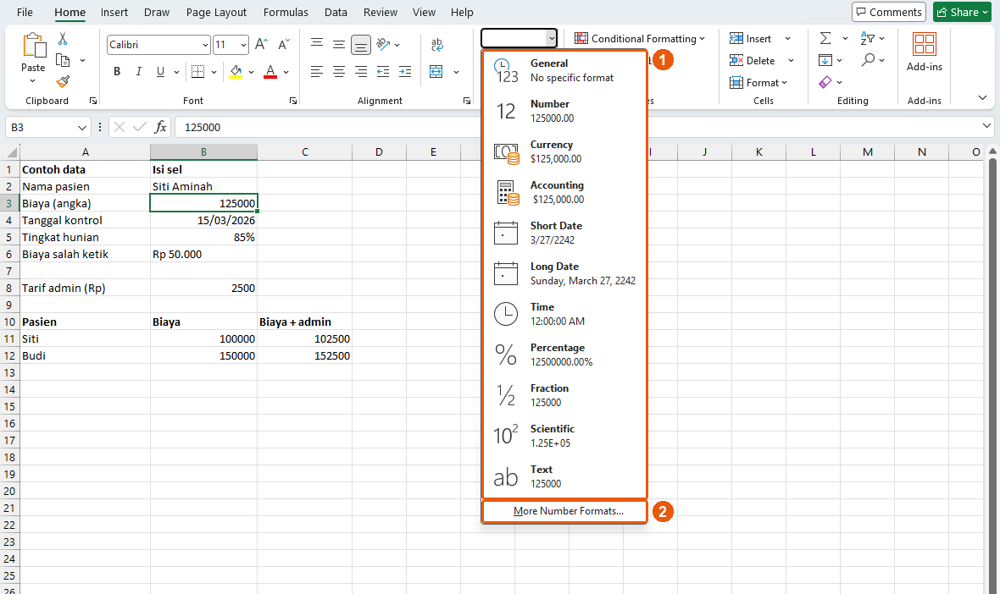
- Pilih sel atau rentang yang akan diubah, lalu klik panah kecil di kotak Number Format. Daftar pilihan terbuka: General, Number, Currency, Accounting, Short Date, Long Date, Time, Percentage, Fraction, Scientific, dan Text.
- Klik More Number Formats... kalau ingin pengaturan lebih rinci, misalnya jumlah desimal.
Langkah 3: ubah tipe data lewat Format Cells
Cara lain: pilih sel, tekan Ctrl + 1 (atau klik kanan lalu Format Cells), dan buka tab Number.
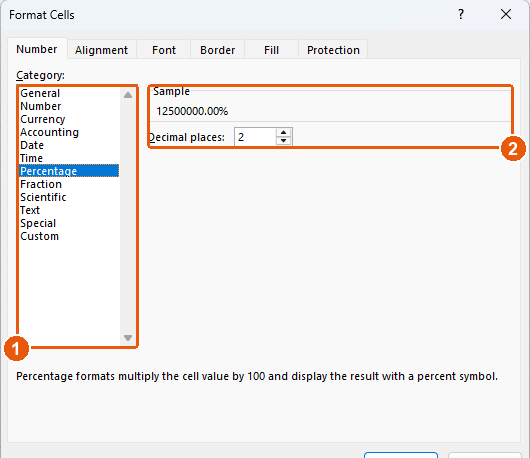
- Category: pilih jenis tipe data, misalnya Percentage.
- Bagian kanan menampilkan Sample (contoh tampilan) dan pengaturan tambahan seperti Decimal places. Klik OK untuk menerapkan.
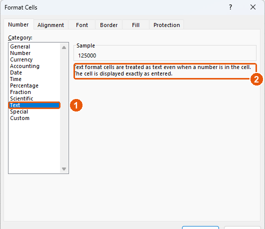
- Kategori Text membuat isi sel diperlakukan sebagai teks, walaupun berisi angka.
- Keterangan di dialog: sel ditampilkan persis seperti yang diketik. Angka berformat Text tidak ikut dijumlahkan oleh rumus.
Cara mengenali tipe data dari tampilannya
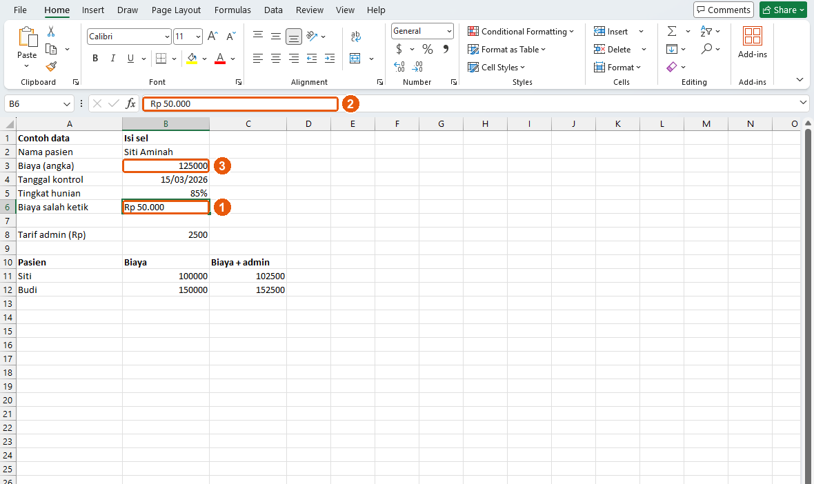
- B6 berisi Rp 50.000 dan rata kiri, tanda bahwa Excel menganggapnya teks.
- Formula Bar menampilkan isi asli sel persis seperti yang diketik, tanpa format angka apa pun.
- Bandingkan dengan B3 (125000) yang rata kanan, tanda angka sungguhan.
Referensi sel: apa dan untuk apa?
Referensi sel adalah alamat sel yang ditulis di dalam rumus, misalnya B2. Dengan referensi, rumus mengambil nilai dari sel itu, bukan dari angka yang diketik. Ada dua keuntungan:
- Kalau data di sel berubah, hasil rumus ikut berubah sendiri.
- Satu rumus bisa disalin ke banyak baris (seret kotak kecil di pojok kanan bawah sel, disebut fill handle) tanpa mengetik ulang.
Saat rumus disalin, Excel menggeser alamatnya mengikuti arah salinan. Kadang itu yang kita mau, kadang tidak. Karena itu ada dua jenis referensi: relatif (ikut bergeser) dan absolut (dikunci, tidak bergeser).
Contoh kasus: tarif admin yang sama untuk semua pasien
Tarif admin Rp 2.500 ada di sel B8. Setiap pasien harus membayar biaya + tarif admin itu. Rumus di C11 ditulis lalu disalin ke C12:
| Cara menulis | Rumus di C11 | Setelah disalin ke C12 | Hasil C12 |
|---|---|---|---|
| Relatif | =B11+B8 | =B12+B9 (B8 ikut bergeser jadi B9, sel kosong) | 150.000 (salah, admin tidak terhitung) |
| Absolut | =B11+$B$8 | =B12+$B$8 (B8 terkunci) | 152.500 (benar) |
Tiga bentuk referensi
| Bentuk | Nama | Saat disalin | Dipakai untuk |
|---|---|---|---|
| B8 | Relatif | Kolom dan baris ikut bergeser | Data yang berbeda tiap baris (harga, jumlah) |
| $B$8 | Absolut | Kolom dan baris terkunci | Nilai tetap: tarif, persentase, kurs |
| $B8 atau B$8 | Campuran | Hanya kolom atau hanya baris yang terkunci | Tabel dua arah (dipelajari lebih lanjut nanti) |
Melihat referensi absolut di Excel asli
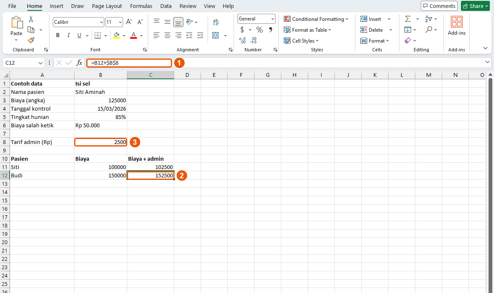
- Klik C12. Formula Bar menampilkan =B12+$B$8.
- Hasilnya (152.500) tampil di sel C12. B12 relatif, ikut bergeser kalau rumus disalin.
- $B$8 (tarif admin 2.500) absolut: tanda $ mengunci kolom dan baris, sehingga tidak bergeser saat disalin. Tekan F4 saat mengedit rumus untuk memberi tanda $ otomatis.
Semua rumus Excel dimulai dengan tanda =. Excel lalu menghitung sendiri dan menampilkan hasilnya di sel. Data stok obat di bawah adalah fiktif untuk keperluan latihan.
| Operator | Fungsi | Contoh | Hasil |
|---|---|---|---|
| + | Tambah | =120+30 | 150 |
| - | Kurang | =120-45 | 75 |
| * | Kali | =5000*10 | 50000 |
| / | Bagi | =45/5 | 9 |
Langkah 1: mengetik rumus pertama
Tujuan: menghitung Subtotal = Harga × Jumlah untuk Paracetamol.
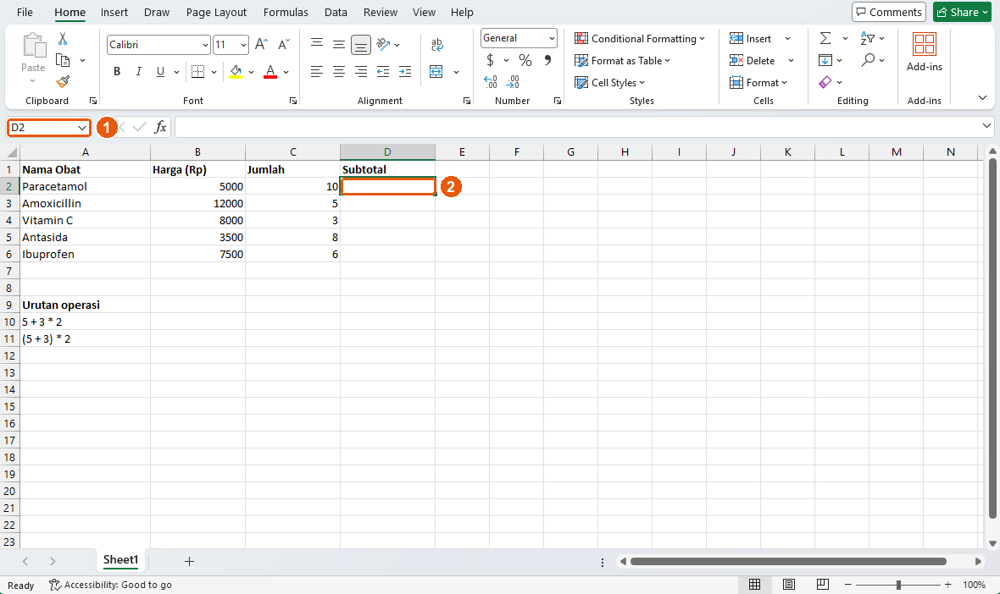
- Lihat Name Box yang menampilkan alamat sel aktif.
- Klik sel D2, tempat hasil Subtotal akan ditulis.
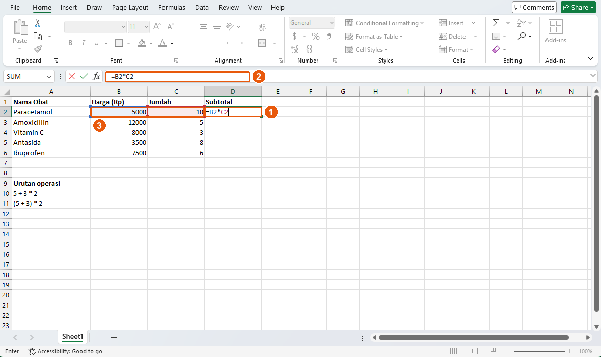
- Sel D2 sedang diedit dan berisi rumus yang diketik.
- Formula Bar menampilkan rumus yang sama: =B2*C2. Rumus harus diawali tanda =.
- Sel yang dipakai (Harga di B2 dan Jumlah di C2) diberi kotak berwarna yang cocok dengan warna alamat di rumus. Ini membantu mengecek rumus sebelum menekan Enter.
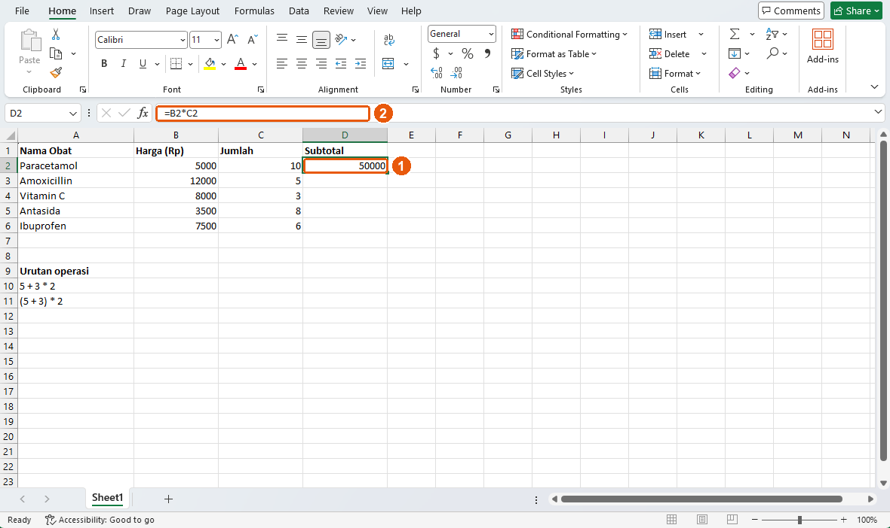
- Tekan Enter. Sel D2 menampilkan hasilnya, yaitu 50000.
- Klik D2 lagi: sel menampilkan hasil, sedangkan Formula Bar tetap menyimpan rumus aslinya.
Langkah 2: menyalin rumus ke baris lain
Tidak perlu mengetik rumus satu per satu. Salin rumus D2 ke bawah.
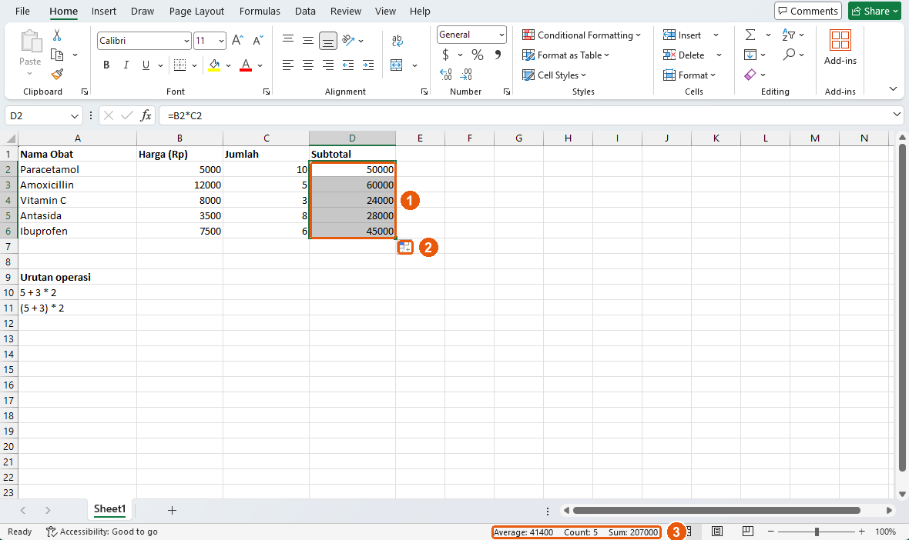
- Pilih D2, lalu seret kotak kecil di pojok kanan bawah (fill handle) ke bawah sampai D6. Seluruh sel D2 sampai D6 terisi hasil.
- Tombol Auto Fill Options muncul di sudut bawah hasil salinan. Klik untuk memilih cara menyalin.
- Saat beberapa sel angka dipilih, status bar di bawah menampilkan Average, Count, dan Sum secara otomatis, berguna untuk mengecek hasil dengan cepat.
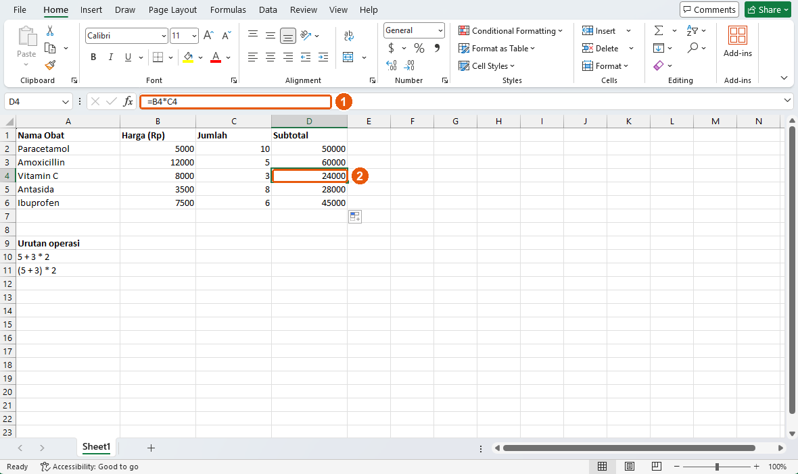
- Formula Bar menampilkan =B4*C4. Excel menyesuaikan alamat rumus otomatis mengikuti barisnya.
- Sel D4 menampilkan hasil Vitamin C: 8000 × 3 = 24000.
Langkah 3: urutan operasi di Excel
Ketik rumus berikut di sel kosong dan bandingkan hasilnya.
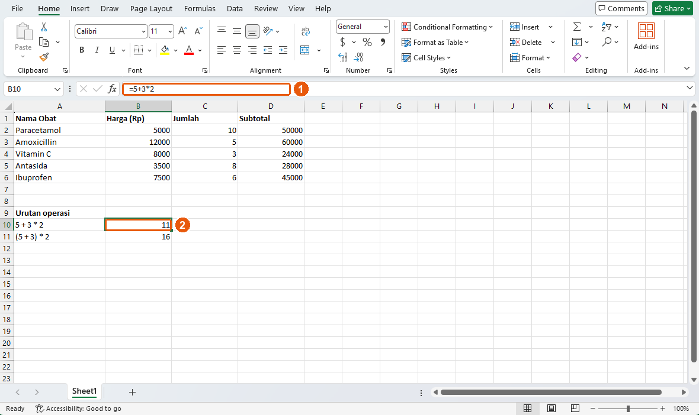
- Formula Bar menampilkan =5+3*2.
- Hasilnya 11, karena perkalian dikerjakan lebih dulu.
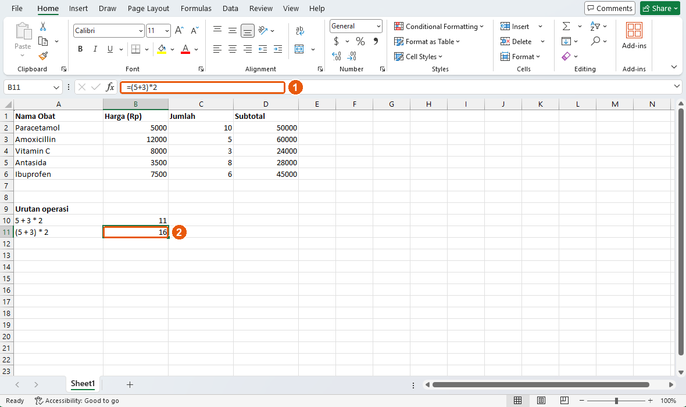
- Formula Bar menampilkan =(5+3)*2.
- Hasilnya 16, karena tanda kurung membuat 5+3 dikerjakan lebih dulu.
Apa itu fungsi?
Fungsi adalah rumus siap pakai bawaan Excel yang mengerjakan satu jenis perhitungan tertentu. Kita cukup menyebut nama fungsinya dan sel yang akan dihitung, lalu Excel yang mengerjakannya.
| Tanpa fungsi | Dengan fungsi | |
|---|---|---|
| Menjumlah 5 subtotal | =D2+D3+D4+D5+D6 | =SUM(D2:D6) |
| Menjumlah 100 baris | Rumus sangat panjang, mudah salah ketik | =SUM(D2:D101) |
Bagian-bagian sebuah fungsi
=SUM(D2:D6)
| Bagian | Pada contoh | Artinya |
|---|---|---|
| Tanda sama dengan | = | Penanda bahwa isi sel adalah rumus. |
| Nama fungsi | SUM | Perhitungan yang dikerjakan (SUM = jumlahkan). |
| Tanda kurung | ( ) | Membungkus argumen fungsi. |
| Argumen | D2:D6 | Data yang dihitung. Berupa rentang sel (dari D2 sampai D6), satu sel, atau angka. |
Fungsi yang paling sering dipakai
Data contoh: tabel stok obat fiktif (Harga di B2:B6, Subtotal di D2:D6).
| Fungsi | Kegunaan | Contoh di RS | Contoh rumus | Hasil |
|---|---|---|---|---|
| SUM | Menjumlahkan angka | Total nilai stok obat, total kunjungan | =SUM(D2:D6) | 207000 |
| AVERAGE | Menghitung rata-rata | Rata-rata harga obat, rata-rata pasien per hari | =AVERAGE(B2:B6) | 7200 |
| COUNT | Menghitung banyaknya sel berisi angka | Jumlah jenis obat, jumlah hari pelayanan | =COUNT(B2:B6) | 5 |
| MAX | Mencari nilai terbesar | Kunjungan tertinggi, obat termahal | =MAX(B2:B6) | 12000 |
| MIN | Mencari nilai terkecil | Kunjungan terendah, obat termurah | =MIN(B2:B6) | 3500 |
Hari ini kita fokus pada SUM, AVERAGE, dan COUNT. MAX dan MIN dibahas lengkap di Pertemuan 07. Fungsi COUNT hanya menghitung sel berisi angka; sel berisi teks atau kosong tidak dihitung.
Cara Penggunaan Fungsi
Tujuan: menghitung total nilai stok dari kolom Subtotal.
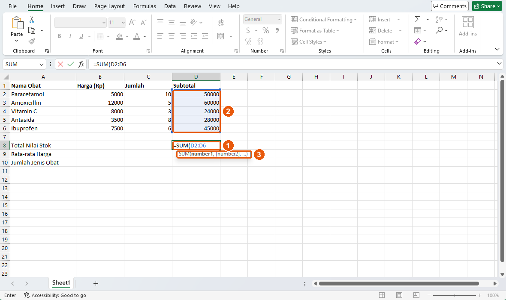
- Klik sel tujuan, yaitu D8, lalu ketik =SUM(.
- Pilih atau ketik rentangnya, D2:D6. Sel yang dipakai diberi kotak berwarna.
- Petunjuk di bawah sel menampilkan bentuk fungsi: SUM(number1, [number2], ...). Tutup kurung lalu tekan Enter.
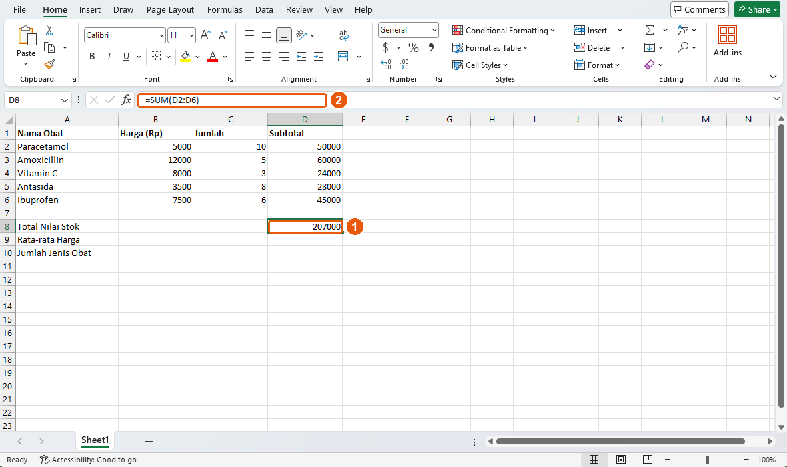
- Sel D8 menampilkan hasilnya: 207000.
- Formula Bar menyimpan rumus aslinya, =SUM(D2:D6).
Cara lain memasukkan fungsi
Selain mengetik, Excel menyediakan dua jalan pintas supaya tidak perlu menghafal nama fungsi.
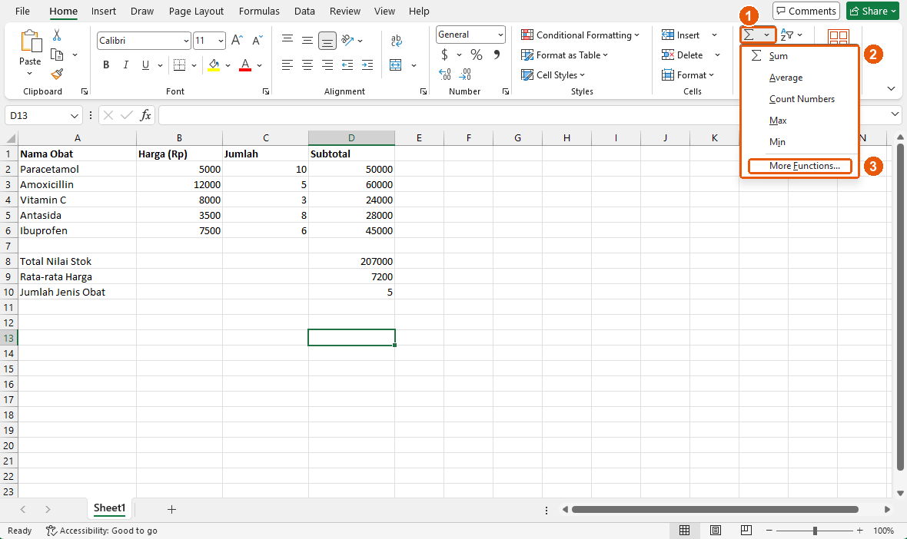
- Tombol AutoSum (Σ) di tab Home, grup Editing.
- Klik panah di sebelahnya untuk memilih Sum, Average, Count Numbers, Max, atau Min. Excel menebak rentang di dekat sel dan kita tinggal menekan Enter.
- More Functions... membuka daftar lengkap seluruh fungsi.
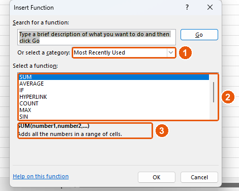
- Klik tombol fx di samping Formula Bar untuk membuka Insert Function. Pilih kategori fungsi, misalnya Most Recently Used.
- Pilih fungsi dari daftar. Kalau lupa namanya, ketik deskripsi pekerjaan di kotak pencarian lalu klik Go.
- Bagian bawah menampilkan bentuk dan keterangan singkat fungsi yang dipilih. Klik OK untuk melanjutkan.
Tantangan: lengkapi baris ringkasan di bawah
Referensi (Microsoft Support, diakses 19 November 2026):
1. Overview of formulas in Excel
2. SUM function
3. AVERAGE function
4. COUNT function
5. Excel functions (by category)
Latihan lengkap: data kunjungan poli fiktif RS Harapan Bersama selama sepekan. Selesaikan 5 tantangan bertingkat.
Data di bawah sepenuhnya fiktif dan hanya digunakan untuk keperluan pembelajaran.
Tugas Lab: Rekap Penjualan Farmasi di Excel Nyata
Kasus: bagian farmasi RS Harapan Bersama (fiktif) meminta rekap penjualan 24 jenis obat untuk satu bulan. Data mentah sudah ada, tetapi belum dihitung dan sebagian datanya salah tipe. Selesaikan seluruh tahap di bawah ini.
Tahap A: periksa tipe data
- Buka berkas, lihat kolom Harga Satuan dan Jumlah Terjual. Ada beberapa sel yang berisi teks (rata kiri atau berlabel segitiga hijau). Temukan semuanya.
- Ubah setiap sel tersebut menjadi angka murni. Buktikan berhasil dengan fungsi COUNT: jumlah angka di tiap kolom harus 24.
Tahap B: hitung per baris (baris 2 sampai 25)
- Kolom Subtotal: Harga × Jumlah Terjual.
- Kolom Diskon: Subtotal × persentase diskon yang tertulis di sel N1. Persentase itu harus dikunci dengan referensi absolut agar tetap benar saat rumus disalin ke 24 baris.
- Kolom Total Bayar: Subtotal dikurangi Diskon.
- Kolom Stok Akhir: Stok Awal dikurangi Jumlah Terjual.
- Kolom Kontribusi: Total Bayar tiap obat dibagi total seluruh Total Bayar, ditampilkan sebagai persen (atur lewat Number Format). Total pembaginya harus dikunci.
Tahap C: ringkasan (baris 29 sampai 33, hasil di kolom E)
- Total pendapatan (jumlah seluruh Total Bayar).
- Total unit terjual.
- Rata-rata harga satuan.
- Jumlah jenis obat.
- Rata-rata Total Bayar per jenis obat.
Tahap D: uji dan simpan
- Ubah persentase diskon di N1 menjadi 10%. Seluruh kolom Diskon, Total Bayar, Kontribusi, dan ringkasan harus ikut berubah. Kembalikan ke 5%.
- Simpan sebagai Nama_NIM_P06.xlsx dan kumpulkan.
Kriteria penilaian: 1) Seluruh sel teks pada Harga dan Jumlah sudah menjadi angka (COUNT = 24). 2) Semua rumus diawali = dan memakai alamat sel, tanpa angka yang diketik manual. 3) Referensi absolut dipakai dengan benar untuk diskon dan total pembagi. 4) Hasil perhitungan dan ringkasan tepat. 5) Kolom Kontribusi berformat persen. 6) File disimpan sebagai .xlsx dengan nama yang sesuai.
Jawab setelah mengikuti seluruh materi. Bandingkan dengan skor pre-test kalian.
Perbandingan Pre-test vs Post-test
Ringkasan 5 Poin Kunci
- Anatomi Excel: Name Box (alamat sel), Formula Bar (isi/rumus), header kolom (huruf), header baris (angka), sheet tab (lembar).
- Alamat sel: huruf = kolom, angka = baris. B3 = Kolom B Baris 3. Rentang B2:B10 berarti B2 sampai B10.
- Tipe data: Angka murni (rata kanan) bisa dihitung. Teks dan angka dengan simbol (Rp, %) tidak bisa dihitung langsung.
- Formula dasar: semua rumus diawali =. Operator: * (kali), / (bagi), + (tambah), - (kurang). Urutan: kurung dahulu, lalu */, baru +-.
- SUM/AVERAGE/COUNT: =SUM(rentang) menjumlahkan, =AVERAGE(rentang) merata-ratakan, =COUNT(rentang) menghitung banyaknya angka.
Refleksi
Tindak lanjut: Pertemuan 07 akan membahas fungsi MAX, MIN, dan cara membuat grafik dari data kunjungan RS. Pastikan file .xlsx dari Tugas Lab sudah disiapkan.